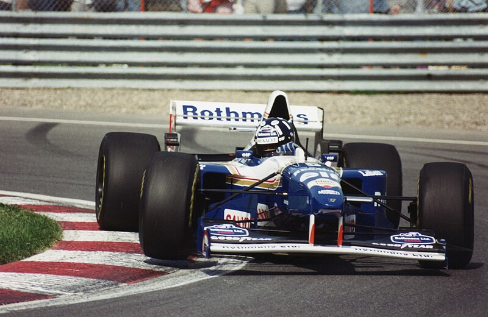

Altın Yıllar
Takım, Honda'nın McLaren'i tercih etmesiyle büyük bir güç kaybına uğradı. 1989'da Renault ile yapılan anlaşma önündeki 10 yılda gelecek olan parlak zeferleri müjdeliyordu. İlk şampiyonluk 1992'de Nigel Mansell ile sonraki hemen bir yıl sonra "profesör" Alain Prost'un geri döndüğü ve son sezonu olan 93'te geldi. 1994'te dönemin en iyi pilotu Ayrton Senna ile sözleşme imzalandı. Ancak sezonun 3. yarışı olan Imola GP'sindeki o uğursuz hafta sonunda Michael Schumacher'in önünde yarışı lider götürürken Tamburello virajında direksiyon milinin kırılması sonucu saatte 250 km/h hızla duvara çarparak öldü. Willams 1996'da Damon Hill, 1997'de de Jacques Villeneuve ile kazandığı şampiyonlukların ardından Renault'un F1 den çekilmesi ile bir daha toparlanamamış bir orta sıra takımı hüviyetine bürünmüştür.
Senelere göre Williams'ın kullandığı motor markaları
- Williams Ford (1976-1983)
- Williams Honda (1983-1987)
- Williams Judd (1988)
- Williams Renault (1989-1999), (2012-2013)
- Williams BMW (2000-2005)
- Williams Cosworth (2006), (2010-2011)
- Williams Toyota (2007-2009)
- Williams Mercedes (2014-günümüz)
Dış Bağlantılar
Williams F1 Team'in Resmi Web Sitesi11 Şubat 2013 tarihinde Wayback Machine sitesinde arşivlendi
